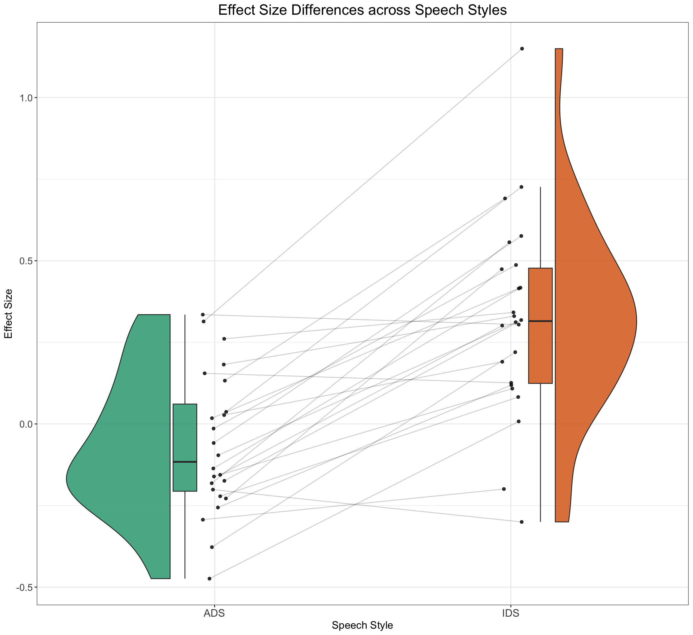
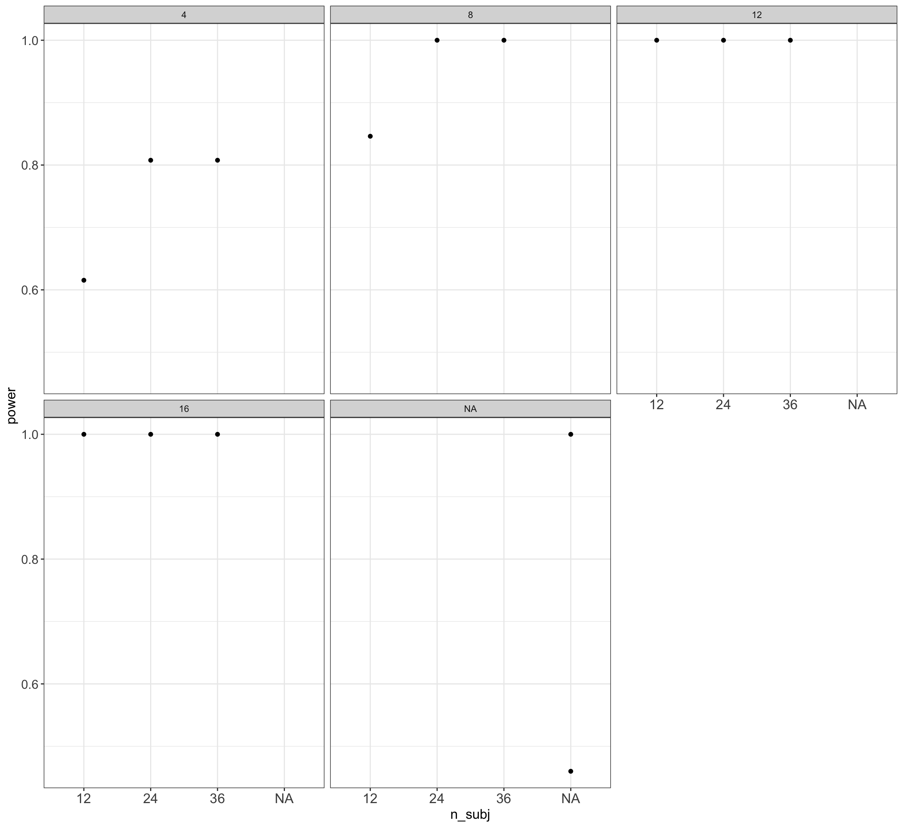

# set up the custom data simulation function
SimulateEffectSizeData <- function(
n_subj = 24, # number of subjects
n_ADS = 8, # number of ingroup stimuli
n_IDS = 8, # number of outgroup stimuli
beta_0 = 0, # grand mean
beta_1 = 0.35, # effect of category
omega_0 = 0.05, # by-item random intercept sd
tau_0 = 0.1, # by-subject random intercept sd
tau_1 = 0.1, # by-subject random slope sd
rho = 0.4, # correlation between intercept and slope
sigma = 0.5) { # residual (standard deviation)
items <- data.frame(
#item_id = seq_len(n_ADS + n_IDS),
Register = rep(c("IDS", "ADS"), c(n_ADS, n_IDS)),
O_0i = rnorm(n = n_ADS + n_IDS, mean = 0, sd = omega_0)) %>%
mutate(item_id = faux::make_id(nrow(.), "I")) %>%
mutate(SpeechStyle = recode(Register, "ADS" = 0, "IDS" = 1))
# simulate a sample of subjects
# sample from a multivariate random distribution
subjects <- faux::rnorm_multi(
n = n_subj,
mu = 0, # means for random effects are always 0
sd = c(tau_0, tau_1), # set SDs
r = rho, # set correlation, see ?faux::rnorm_multi
varnames = c("T_0s", "T_1s")
) %>%
mutate(subj_id = faux::make_id(nrow(.), "S"))
ParameterValues <- crossing(subjects, items) %>%
mutate(e_si = rnorm(nrow(.), mean = 0, sd = sigma)) %>%
dplyr::select(subj_id, item_id, Register, SpeechStyle, everything())
EffectSizeDataSimulated <- ParameterValues %>%
mutate(LT = beta_0 + T_0s + O_0i + (beta_1 + T_1s) * SpeechStyle + e_si) %>%
dplyr::select(subj_id, item_id, Register, SpeechStyle, LT)
}
EffectSizeDataSimulated <- SimulateEffectSizeData()Modelling Simulated Effect Size Data
1 Cumulative Science Perspective
Now it’s time to consider the realm of cumulative science efforts, such as what the ManyBabies Consortium deals with. We know that science stands on the shoulder of – not giants – but normal human beings who are as susceptible to confirmation and selection biases as everyone else. Up until now, we have relied on our intuitions about infant looking times based solely on our experience with conducting infant experiments. In this section, we consider how we can make informed choices about setting parameters and how we can capitalise on cumulativec science efforts such as multi-lab replication studies and meta-analyses. Synthesising evidence from studies in a cumulative approach offers insights to the generalisability and heterogeneity of the construct across a wide variety of experimental designs, participants and stimuli. By varying experimenter identity and increasing sample diversity, these large-scale studies contribute to a greater likelihood of generalisability and precision. However, the high degree of uniformity in methodological and analytic implementation can lead to less generalisability across other conditions than a meta-analysis.
Seeing scientific advancement as an iterative procedure involving data accumulation and theory development empowers us to map out the diversity of samples in earlier research, scrutinise the possibilities for generalisability, and point to future directions of research. For the IDS preference effect, we luckily don’t just have to rely on our individual knowledge about infant looking time experiments. We have both a multi-lab replication study and a community-augmented metaanalysis on infants’ preference to attend to IDS over ADS (ManyBabies Consortium, 2020; Zettersten, Cox, et al., 2023). We can leverage these estimates in calculating statistical power, but how do we specifially implement these effect size estimates in our apriori power analysis?
2 Simulating Effect Size Data and Making Informed Choices
Let’s imagine a scenario where a synthesis of evidence has produced an effect size estimate of 0.35 [XX; XX], just as in Zettersten, Cox, Bergmann et al. (2024). How can we use this to guide our study of IDS preference?
Let’s adapt our simulation function from previous pages to the new scale of effect sizes; here, we consider an effect size of 0 to denote no preference for either speech style. That is, infants prefer to attend to ADS just as much as they do to IDS.
Let’s again plot this data to see if it looks correct:
EffectSizeDataSimulated <- SimulateEffectSizeData()
dat_sim_plot <- EffectSizeDataSimulated %>%
group_by(subj_id, Register) %>%
dplyr::summarise(medLT = mean(LT))`summarise()` has grouped output by 'subj_id'. You can override using the
`.groups` argument.ggplot(aes(x = Register, y = medLT, fill = Register), data = dat_sim_plot) +
geom_rain(alpha = 0.8, rain.side = "f1x1", id.long.var = "subj_id",
point.args.pos = list(position = position_jitter(width = 0.04,
height = 0, seed = 42)), line.args.pos = list(position = position_jitter(width = 0.04,
height = 0, seed = 42))) + scale_fill_brewer(palette = "Dark2") +
ggtitle("Effect Size Differences across Speech Styles") +
xlab("Speech Style") + ylab("Effect Size") + scale_color_manual(values = viridis(n = 27)) +
plot_theme
3 Time to Power-Up the Analysis
# simulate, analyze, and return a table of parameter
# estimates
SimulateAndModelEFData <- function(...) {
dataSimulated <- SimulateEffectSizeData()
model <- lmer(LT ~ 1 + SpeechStyle + (1 | item_id) + (1 +
SpeechStyle | subj_id), data = dataSimulated)
# family = gaussian(link = 'log'))
broom.mixed::tidy(model)
}
# run simulations and save to a file
n_runs <- 100 # use at least 100 to get stable estimates
simulations <- purrr::map_df(1:n_runs, ~SimulateAndModelEFData())boundary (singular) fit: see help('isSingular')
boundary (singular) fit: see help('isSingular')
boundary (singular) fit: see help('isSingular')
boundary (singular) fit: see help('isSingular')
boundary (singular) fit: see help('isSingular')
boundary (singular) fit: see help('isSingular')
boundary (singular) fit: see help('isSingular')
boundary (singular) fit: see help('isSingular')
boundary (singular) fit: see help('isSingular')
boundary (singular) fit: see help('isSingular')
boundary (singular) fit: see help('isSingular')
boundary (singular) fit: see help('isSingular')
boundary (singular) fit: see help('isSingular')
boundary (singular) fit: see help('isSingular')
boundary (singular) fit: see help('isSingular')
boundary (singular) fit: see help('isSingular')
boundary (singular) fit: see help('isSingular')
boundary (singular) fit: see help('isSingular')
boundary (singular) fit: see help('isSingular')
boundary (singular) fit: see help('isSingular')
boundary (singular) fit: see help('isSingular')
boundary (singular) fit: see help('isSingular')
boundary (singular) fit: see help('isSingular')
boundary (singular) fit: see help('isSingular')
boundary (singular) fit: see help('isSingular')
boundary (singular) fit: see help('isSingular')
boundary (singular) fit: see help('isSingular')
boundary (singular) fit: see help('isSingular')
boundary (singular) fit: see help('isSingular')
boundary (singular) fit: see help('isSingular')
boundary (singular) fit: see help('isSingular')
boundary (singular) fit: see help('isSingular')
boundary (singular) fit: see help('isSingular')
boundary (singular) fit: see help('isSingular')
boundary (singular) fit: see help('isSingular')
boundary (singular) fit: see help('isSingular')
boundary (singular) fit: see help('isSingular')
boundary (singular) fit: see help('isSingular')
boundary (singular) fit: see help('isSingular')
boundary (singular) fit: see help('isSingular')
boundary (singular) fit: see help('isSingular')
boundary (singular) fit: see help('isSingular')
boundary (singular) fit: see help('isSingular')
boundary (singular) fit: see help('isSingular')
boundary (singular) fit: see help('isSingular')
boundary (singular) fit: see help('isSingular')
boundary (singular) fit: see help('isSingular')
boundary (singular) fit: see help('isSingular')
boundary (singular) fit: see help('isSingular')
boundary (singular) fit: see help('isSingular')
boundary (singular) fit: see help('isSingular')
boundary (singular) fit: see help('isSingular')
boundary (singular) fit: see help('isSingular')
boundary (singular) fit: see help('isSingular')
boundary (singular) fit: see help('isSingular')
boundary (singular) fit: see help('isSingular')
boundary (singular) fit: see help('isSingular')
boundary (singular) fit: see help('isSingular')
boundary (singular) fit: see help('isSingular')
boundary (singular) fit: see help('isSingular')
boundary (singular) fit: see help('isSingular')
boundary (singular) fit: see help('isSingular')
boundary (singular) fit: see help('isSingular')
boundary (singular) fit: see help('isSingular')
boundary (singular) fit: see help('isSingular')
boundary (singular) fit: see help('isSingular')
boundary (singular) fit: see help('isSingular')
boundary (singular) fit: see help('isSingular')
boundary (singular) fit: see help('isSingular')
boundary (singular) fit: see help('isSingular')
boundary (singular) fit: see help('isSingular')write_csv(simulations, "EFsimulations.csv")# read saved simulation data
sims <- read_csv("EFsimulations.csv", col_types = cols(
# makes sure plots display in this order
group = col_factor(ordered = TRUE),
term = col_factor(ordered = TRUE)
)) %>%
filter(effect == "fixed") %>%
dplyr::select(term, estimate, std.error, p.value)
# calculate mean estimates and power for specified alpha
alpha <- 0.05
sims %>%
group_by(term) %>%
dplyr::summarize(
mean_estimate = mean(estimate),
mean_se = mean(std.error),
power = mean(p.value < alpha),
.groups = "drop"
)# A tibble: 2 × 4
term mean_estimate mean_se power
<fct> <dbl> <dbl> <dbl>
1 (Intercept) -0.000564 0.0460 0.04
2 SpeechStyle 0.352 0.0648 1 This looks wonderful. If we were designing a study that perfectly emulated the average experiment included in the ManyBabies multi-lab replication study or that in the meta-analysis, we would have enough power with 24 participants and 8 stimulus items. As we saw in the previous exercise sheet, however, our experimental design choices really matter for statistical power. For example, the number of stimulus items (i.e., number of repeated measures per participant) matter hugely, as does number of participants. How can we efficiently explore the multiverse of choices that govern our experimental design and get a better grasp on which parameters matter?
4 Using Grid Searches to Explore the Multiverse of Experimenter Choices
Let’s set up a grid search and allow models to be fit with different parameter values. To do this, we will wrap our Simulation and Modelling function with a higher-level function that inputs a series of parameter combinations that we are interested in exploring further. Here is a suggestion for a function of this type:
run_sims_grid_point <- function(filename_full, trial_n, subj_n) {
ADS_n = trial_n/2
IDS_n = trial_n/2
n_subj = subj_n
dataSimulated <- SimulateEffectSizeData(n_subj = n_subj,
n_ADS = ADS_n, n_IDS = IDS_n)
model <- lmer(LT ~ 1 + SpeechStyle + (1 | item_id) + (1 +
SpeechStyle | subj_id), data = dataSimulated)
sim_results <- broom.mixed::tidy(model)
# append the results to a file
append <- file.exists(filename_full)
write_csv(sim_results, filename_full, append = append)
# return the tidy table
sim_results
}
reps <- 2
subj_n <- seq(12, 36, by = 12)
trial_n <- seq(4, 16, by = 4)
param_combinations <- expand.grid(subj_n = subj_n, trial_n = trial_n)
for (i in seq_len(nrow(param_combinations))) {
sim_params <- param_combinations[i, ]
filename_full <- paste0(here("sims_grid_search/test_grid_search_"),
sim_params$subj_n, "_", sim_params$trial_n, ".csv")
start_time <- Sys.time() # Start time
sims <- purrr::map_df(1:reps, ~run_sims_grid_point(filename_full = filename_full,
subj_n = sim_params$subj_n, trial_n = sim_params$trial_n))
end_time <- Sys.time() # End time
cat("Simulation", i, "Time elapsed:", end_time - start_time,
"\n")
}boundary (singular) fit: see help('isSingular')
boundary (singular) fit: see help('isSingular')Simulation 1 Time elapsed: 1.161242 boundary (singular) fit: see help('isSingular')Warning: Model failed to converge with 1 negative eigenvalue: -2.2e+00Simulation 2 Time elapsed: 1.225213 boundary (singular) fit: see help('isSingular')
boundary (singular) fit: see help('isSingular')Simulation 3 Time elapsed: 1.113626 boundary (singular) fit: see help('isSingular')
boundary (singular) fit: see help('isSingular')Warning: Model failed to converge with 1 negative eigenvalue: -4.4e+00Simulation 4 Time elapsed: 1.014334 boundary (singular) fit: see help('isSingular')
boundary (singular) fit: see help('isSingular')Warning: Model failed to converge with 1 negative eigenvalue: -1.6e+01Simulation 5 Time elapsed: 1.028305 boundary (singular) fit: see help('isSingular')
boundary (singular) fit: see help('isSingular')Warning: Model failed to converge with 1 negative eigenvalue: -1.0e+02Simulation 6 Time elapsed: 1.483256 boundary (singular) fit: see help('isSingular')
boundary (singular) fit: see help('isSingular')Simulation 7 Time elapsed: 1.095819 boundary (singular) fit: see help('isSingular')Warning: Model failed to converge with 1 negative eigenvalue: -2.3e+00boundary (singular) fit: see help('isSingular')Warning: Model failed to converge with 1 negative eigenvalue: -8.4e+01Simulation 8 Time elapsed: 1.120769 boundary (singular) fit: see help('isSingular')
boundary (singular) fit: see help('isSingular')Simulation 9 Time elapsed: 1.247081 boundary (singular) fit: see help('isSingular')
boundary (singular) fit: see help('isSingular')Warning: Model failed to converge with 1 negative eigenvalue: -1.3e+00Simulation 10 Time elapsed: 1.043408 boundary (singular) fit: see help('isSingular')Simulation 11 Time elapsed: 1.205888 boundary (singular) fit: see help('isSingular')Simulation 12 Time elapsed: 1.230725 setwd(here("sims_grid_search"))
file_names <- list.files(pattern = "*.csv")
# read in all CSV files into a list of dataframes
df_list <- purrr::map(file_names, ~{
df <- read.csv(.x)
df$filename <- .x
df
})
df <- purrr::reduce(df_list, dplyr::bind_rows)
df_per_sim <- df %>%
filter(effect == "fixed") %>%
filter(term == "SpeechStyle") %>%
group_by(filename) %>%
summarise(median_estimate = median(estimate), median_se = median(std.error),
power = mean(p.value < 0.05))
PowerGridData <- df_per_sim %>%
mutate(n_subj = sapply(strsplit(filename, "_"), `[`, 4),
n_trial = as.numeric(str_replace(sapply(strsplit(filename,
"_"), `[`, 5), pattern = ".csv", "")))
ggplot(PowerGridData) + geom_point(aes(x = n_subj, y = power)) +
plot_theme + facet_wrap(~n_trial)
mod_sim <- lmer(LT ~ 1 + SpeechStyle + (1 | item_id) + (1 + SpeechStyle |
subj_id), data = EffectSizeDataSimulated)boundary (singular) fit: see help('isSingular')summary(mod_sim)Linear mixed model fit by REML. t-tests use Satterthwaite's method [
lmerModLmerTest]
Formula: LT ~ 1 + SpeechStyle + (1 | item_id) + (1 + SpeechStyle | subj_id)
Data: EffectSizeDataSimulated
REML criterion at convergence: 555.3
Scaled residuals:
Min 1Q Median 3Q Max
-2.94648 -0.64247 -0.03434 0.70657 2.80209
Random effects:
Groups Name Variance Std.Dev. Corr
subj_id (Intercept) 1.828e-02 0.1351933
SpeechStyle 1.443e-02 0.1201233 1.00
item_id (Intercept) 5.544e-08 0.0002355
Residual 2.243e-01 0.4735943
Number of obs: 384, groups: subj_id, 24; item_id, 16
Fixed effects:
Estimate Std. Error df t value Pr(>|t|)
(Intercept) -0.06540 0.04393 29.10355 -1.489 0.147
SpeechStyle 0.38856 0.05420 45.38530 7.169 5.47e-09 ***
---
Signif. codes: 0 '***' 0.001 '**' 0.01 '*' 0.05 '.' 0.1 ' ' 1
Correlation of Fixed Effects:
(Intr)
SpeechStyle -0.206
optimizer (nloptwrap) convergence code: 0 (OK)
boundary (singular) fit: see help('isSingular')